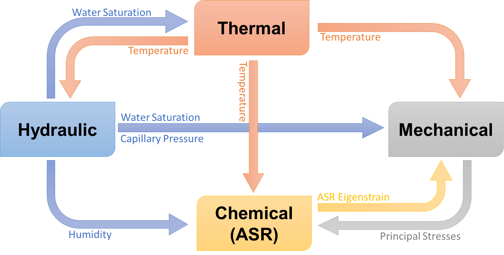
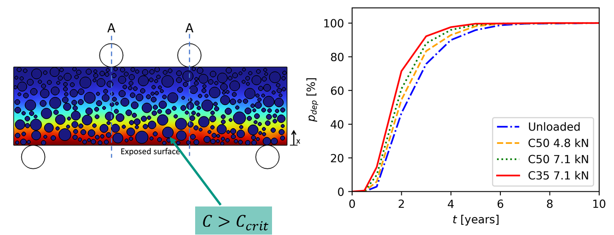

Conference Papers
-
Multiphysics Simulation of Concrete Evolution Due to Combined Actions of Different Degradation Processes Gereon Wildermann, Ravi Patel, Ludwig Bahr, Frank Dehn
28th International Conference on Structural Mechanics in Reactor Technology (SMiRT), 2025
-
Probabilistic service life prediction of chloride induced corrosion under sustained mechanical loading using multiphysical modeling Gereon Wildermann, Annika Schultheiß, Ravi Patel, Frank Dehn
FraMCoS XII - Fracture Mechanics for Concrete and Concrete Structures, 2025
Talks and Presentations
-
Numerical THCM Framework for Assessment of Coupled Degradation Mechanisms in Reinforced Concrete WCCM-ECCOMAS 2026 - 7th World Congress on Computational Mechanics & 10th European Congress on Computational Methods in Applied Sciences and Engineering
-
Comparative Analysis of Numerical Models for Corrosion-Induced Concrete Cracking RILEM 2026 Spring Convention
-
PoroFiPy: A Python-Based THCM Framework for Degradation Assessment of Reinforced Concrete Structures Department of Mechanics Seminar @ ČVUT Praha
-
Verstehen und Vorhersagen von Beton-Schädigungsmechanismen mittels multiphysikalischer Modellierungsansätze 64. DAfStb-Forschungskolloquium
-
Probabilistic Service Life Prediction of Chloride Induced Corrosion Under Sustained Mechanical Loading Using Multiphysical Modeling FraMCoS XII - Fracture Mechanics for Concrete and Concrete Structures
-
Digitaler Zwilling zur Simulation der Betonerhärtung KI4PRECAST Industrie Workshop | preML GmbH & KIT IMB